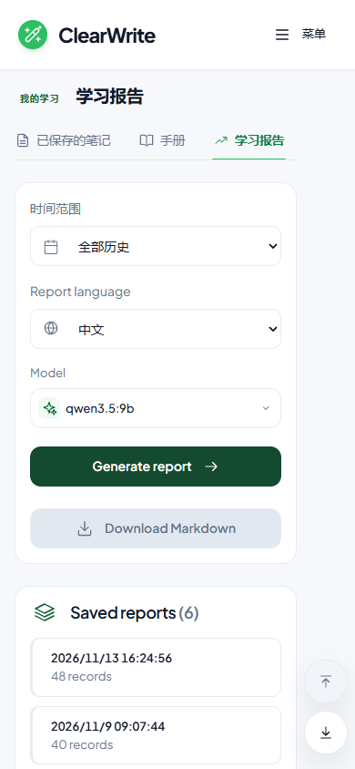
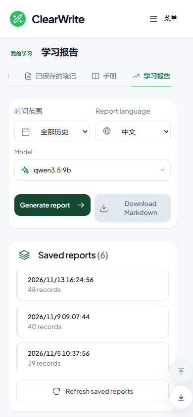
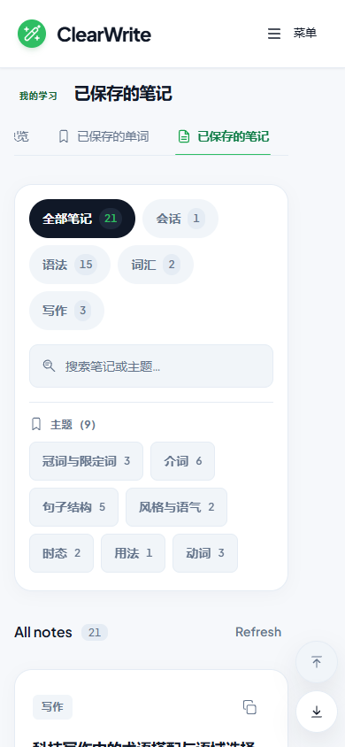
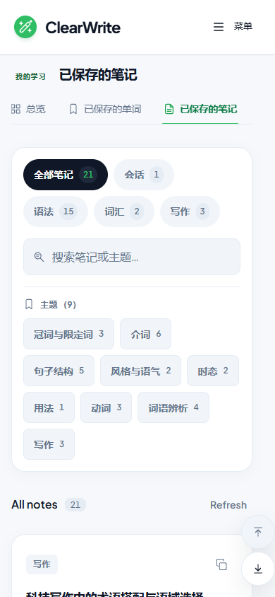
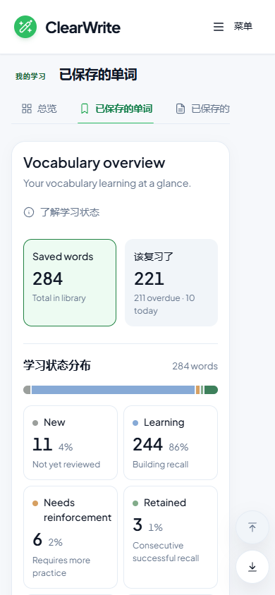
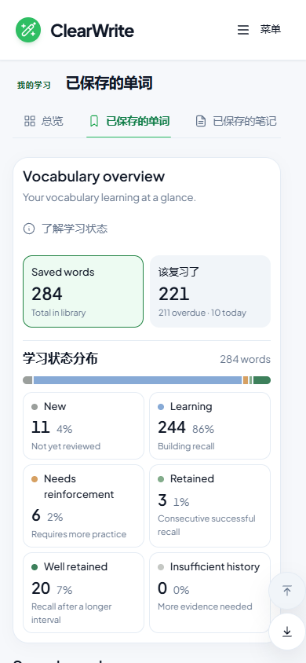
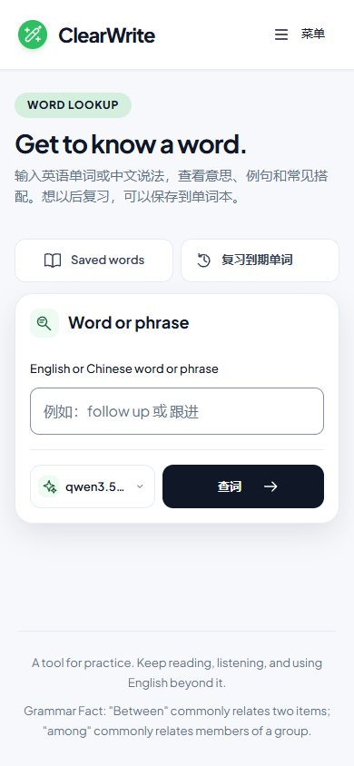

390px 视口、中文界面、接同一份真实数据。优化前取自正在运行的服务（旧构建），优化后取自当前工作区源码经 Vite 渲染。英文文案按要求全部保留，本轮只调整手机端布局。
后续更新（宽度一致 + FAB 覆盖式悬浮）：My learning 内容区已从 342px 进一步统一到 358px，与其它页面完全一致；右下浮动按钮改为不占布局宽度的 fixed 浮层。下方截图与指标表记录的是上一轮 342px 版本的对比，最新 36 渲染实测结果见 audit-report.json。
| 指标 | 优化前 | 优化后 | 变化 |
|---|---|---|---|
| My learning 内容区宽度 | 310 px | 342 px | +32 |
| 学习报告工具栏高度 | 419 px | 263 px | −156 |
| 手册筛选区高度 | 258 px | 158 px | −100 |
| 手册日志起始位置 Y | 513 px | 413 px | −100 |
| Vocabulary overview 卡片高度 | 806 px | 619 px | −187 |
| 已保存单词列表起始 Y | 1388 px | 1194 px | −194 |
| Word lookup 标题区高度 | 207 px | 150 px | −57 |
| Word lookup 表单起始 Y | 472 px | 323 px | −149 |
| 笔记主题区嵌套滚动差 | 48 px | 0 px | −48 |
| 横向溢出 / 页面错误 | 0 / 0 | 0 / 0 | 持平 |
另在 320 / 360 / 430px 复测，全部零横向溢出；npm run test:mobile-ui 覆盖 4 档宽度 × 9 路由 = 36 次渲染，0 断言失败、0 页面错误。


下拉控件与按钮改为双列，工具栏从 419px 收至 263px。
筛选控件两行两列，日志提前 100px 出现；右下按钮收拢。


主题标签不再出现卡片内嵌套滚动条。


概览卡高度 806 → 619px，列表更早进入首屏。

标题区收紧、快捷入口并排，输入框从 y=472 提前到 y=323。